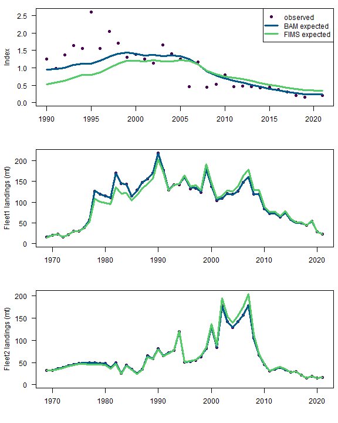
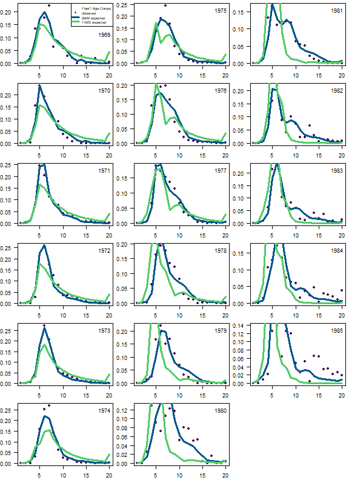
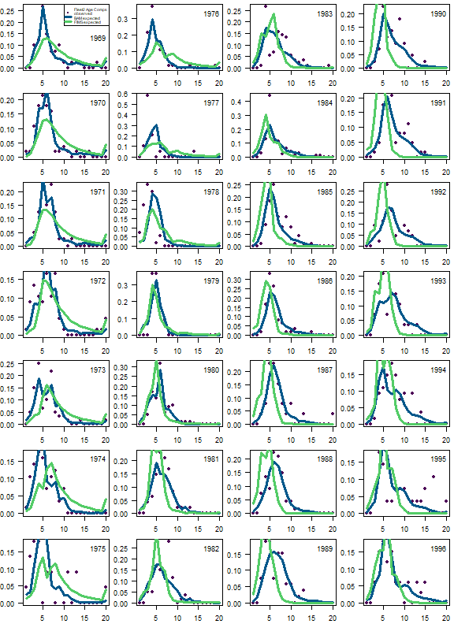
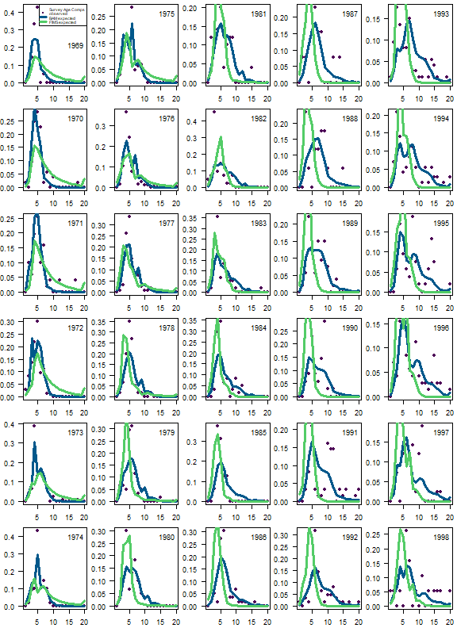
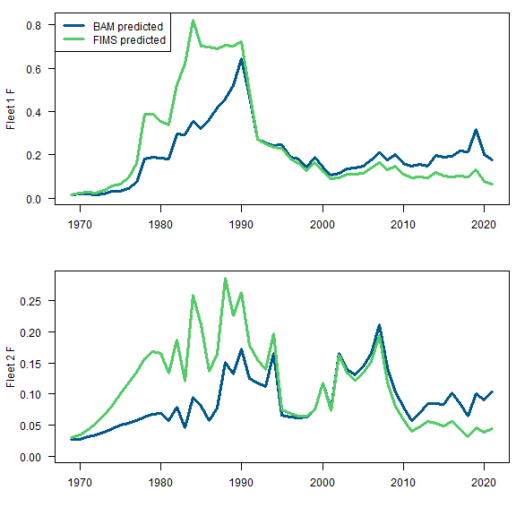
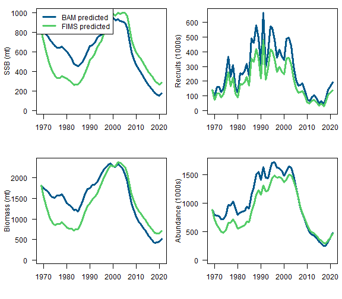

# Names of required packagespackages <-c("dplyr","ggplot2","gt","here","lubridate","remotes","reshape2","shinystan","tidyr","TMB")# Install packages not yet installedinstalled_packages <- packages %in%rownames(installed.packages())if (any(installed_packages ==FALSE)) {install.packages(packages[!installed_packages], repos ="http://cran.us.r-project.org")}# the Bayesian case study requires these extra packagesif (!"StanEstimators"%in%rownames(installed.packages())) {install.packages("StanEstimators", repos =c("https://andrjohns.r-universe.dev", "https://cloud.r-project.org"))}if (!"adnuts"%in%rownames(installed.packages())) { remotes::install_github("Cole-Monnahan-NOAA/adnuts", ref="sparse_M")}# SS3 case studies require r4ssif (!"r4ss"%in%rownames(installed.packages())) { remotes::install_github("r4ss/r4ss")}# Install FIMS: main branch version if on main, dev version on any other branchbranch_name <-system("git branch --show-current", intern =TRUE)use_fims_main <-grepl("main", branch_name)if (use_fims_main) { remotes::install_github("NOAA-FIMS/FIMS")} else { remotes::install_github("NOAA-FIMS/FIMS", ref ="dev")}# Load packagesinvisible(lapply(packages, library, character.only =TRUE))library(FIMS)library(adnuts)R_version <- version$version.stringTMB_version <-packageDescription("TMB")$VersionFIMS_commit <-substr(packageDescription("FIMS")$GithubSHA1, 1, 7)source(file.path("R", "utils.R"))
Code
ggplot2::theme_set(ggplot2::theme_bw())
R version: R version 4.5.0 (2025-04-11)
TMB version: 1.9.17
FIMS commit: 5e3995b
Stock name: South Atlantic scamp grouper
Region: SEFSC
Analyst: Kyle Shertzer
Analyses completed on 1 July 2024
Simplifications or modifications to the original assessment
The original stock assessment (SEDAR-68OA) was conducted using the Beaufort Assessment Model (BAM). That assessment included details not yet available in FIMS, and so the following simplifications or modifications were made to the BAM configuration to allow more direct comparisons with FIMS output. These assessments and comparisons are for demonstration only.
Simplifications or modifications:
Set SSB calculations to occur on Jan. 1, rather than time of peak spawning
Set abundance calculations for matching index data to occur on Jan. 1, rather than mid-year sampling
Dropped time blocks on fleets’ selectivities
Dropped all length compositions
Dropped estimation of the variation in size at age, as this parameter is not estimable without length comps.
Converted index data and predictions to occur in weight rather than numbers
Converted SSB to be female only. Because scamp are a protogynous hermaphrodite, the original assessment accounted for males implicitly by computing SSB as the sum of total (male + female) mature biomass. One way to match that accounting would be to assume that the female maturity vector equals that of both sexes combined, and then further assume that the population is 100% female. However, current FIMS (1 July 2024) does not allow deviation from a 50:50 sex ratio. Thus, for this example, FIMS and BAM use the maturity vector of both sexes combined, but apply that vector only to females and assume a 50:50 sex ratio when computing SSB.
Female maturity at age modeled as a logistic function, rather than empirical.
Extended estimates of rec devs forward in time to the terminal year. Based on likelihood profiling, values from the last two years were not estimable, and thus were fixed in the original assessment.
Extended estimates of rec devs backward in time to the initial year, 1969. The original assessment started estimating rec devs in 1980, when age composition data become available.
Dropped the fishery dependent growth curve and set mean size at age of the landings equal to the population growth curve.
Converted all observed and predicted landings to weight (mt). The original assessment used units native to the data collection: commercial in pounds and recreational in numbers.
Replaced Dirichlet-multinomial with standard multinomial distribution for fitting age comps.
Extended age comps to include ages 1-20+, as modeled in the population. The original assessment modeled ages 1-20+ in the population, but fitted ages 1-15+ in the age compositions because of many zeros in the 16-20 age range.
Dropped fishery dependent indices. This was for simplicity, as modeling those indices would require mirroring a fleet’s selectivity, which is not something I currently know how to do in FIMS.
Add your script that sets up and runs the model
Code
################################################ South Atlantic scamp grouper example assessment# Compare output from FIMS and a simplified version of BAM############################################### clear memoryclear()grDevices::graphics.off()sca <-dget("data_files/scamp32o.rdat") # get scamp data and output from simplified version of BAM# Set dimensionsstyr <- dplyr::first(sca$t.series$year)endyr <- dplyr::last(sca$t.series$year)years <- styr:endyrnyears <- endyr - styr +1# the number of years which we have data fornseasons <-1# the number of seasons in each year. FIMS currently defaults to 1ages <- sca$a.series$age # age vector.nages <-length(ages) # the number of age groups.# Prepare data; initialize all values with -999 (missing)# fleet1 is commercial, fleet2 is recreationalfleet1_ac <- fleet2_ac <- survey_ac <-matrix(-999, nrow = nyears, ncol = nages)# Previously used log(sqrt(log(1.0 + fleet1_landings_cv^2)))# CV is arithmetic space is what is used to fit in BAM# the above code converts it to standard deviation in log space# create_default_DlnormDistribution takes the log of it for you# so we want sqrt(log(1.0 + fleet1_landings_cv^2))# KFJ These values might be the uncertainty in catch rather than in F, where# they are used for Ffleet1_landings <- sca$t.series$L.COM.obfleet1_landings_cv <- sca$t.series$cv.L.COMfleet1_landings_sd <-sqrt(log(1.0+ fleet1_landings_cv^2))fleet2_landings <- sca$t.series$L.REC.obfleet2_landings_cv <- sca$t.series$cv.L.RECfleet2_landings_sd <-sqrt(log(1.0+ fleet2_landings_cv^2))survey_index <- sca$t.series$U.CVT.ob |> tidyr::replace_na(-999)survey_index_cv <- sca$t.series$cv.U.CVTsurvey_index_sd <-sqrt(log(1.0+ survey_index_cv^2)) |> tidyr::replace_na(1) |> base::replace(nyears -1, 1) # manually replacing the 2020 CV as a missing value# COMMENT: These multinomial entries are not whole numbers and many <1. This is not# technically correct, but it does not seem to make a difference based on testing.fleet1_ac_n <- sca$t.series$acomp.COM.n |> tidyr::replace_na(1)fleet2_ac_n <- sca$t.series$acomp.REC.n |> tidyr::replace_na(1)survey_ac_n <- sca$t.series$acomp.CVT.n |> tidyr::replace_na(1)fleet1_ac[!is.na(sca$t.series$acomp.COM.n), ] <- sca$comp.mats$acomp.COM.ob fleet2_ac[!is.na(sca$t.series$acomp.REC.n), ] <- sca$comp.mats$acomp.REC.ob survey_ac[!is.na(sca$t.series$acomp.CVT.n), ] <- sca$comp.mats$acomp.CVT.ob ## put data into fims friendly formfleet1_landings_df <-data.frame(type ="landings",name ="fleet1",age =NA,datestart =paste0(seq(styr, endyr), "-01-01"),dateend =paste0(seq(styr, endyr), "-12-31"),value =as.numeric(fleet1_landings),unit ="mt",uncertainty = fleet1_landings_sd)fleet2_landings_df <-data.frame(type ="landings",name ="fleet2",age =NA,datestart =paste0(seq(styr, endyr), "-01-01"),dateend =paste0(seq(styr, endyr), "-12-31"),value =as.numeric(fleet2_landings),unit ="mt",uncertainty = fleet2_landings_sd)survey_index_df <-data.frame(type ="index",name ="survey1",age =NA,datestart =paste0(seq(styr, endyr), "-01-01"),dateend =paste0(seq(styr, endyr), "-12-31"),value =as.numeric(survey_index),unit ="",uncertainty = survey_index_sd)fleet1_ac_df <-data.frame(type ="age",name ="fleet1",age =rep(seq(1, nages), nyears),datestart =rep(paste0(seq(styr, endyr), "-01-01"), each = nages),dateend =rep(paste0(seq(styr, endyr), "-12-31"), each = nages),value =as.numeric(t(fleet1_ac)),unit ="",uncertainty =rep(fleet1_ac_n, each = nages))fleet2_ac_df <-data.frame(type ="age",name ="fleet2",age =rep(seq(1, nages), nyears),datestart =rep(paste0(seq(styr, endyr), "-01-01"), each = nages),dateend =rep(paste0(seq(styr, endyr), "-12-31"), each = nages),value =as.numeric(t(fleet2_ac)),unit ="",uncertainty =rep(fleet2_ac_n, each = nages))survey_ac_df <-data.frame(type ="age",name ="survey1",age =rep(seq(1, nages), nyears),datestart =rep(paste0(seq(styr, endyr), "-01-01"), each = nages),dateend =rep(paste0(seq(styr, endyr), "-12-31"), each = nages),value =as.numeric(t(survey_ac)),unit ="",uncertainty =rep(survey_ac_n, each = nages))weight_at_age <-data.frame(type ="weight-at-age",name ="fleet1",age =seq(nages),datestart =rep(paste0(styr, "-01-01"), nages),dateend =rep(paste0(styr, "-12-31"), nages),value = sca$a.series$wgt.mt,unit ="mt",uncertainty =NA)landings <-rbind(fleet1_landings_df, fleet2_landings_df)index <- survey_index_dfagecomps <-rbind(fleet1_ac_df, fleet2_ac_df, survey_ac_df)res <-rbind(landings, index, agecomps, weight_at_age)data_4_model <- FIMS::FIMSFrame(res)##################################################################################### set up selectivities for fleets and surveyspp_fleet1_selectivity <-list(selectivity =list(form ="LogisticSelectivity"),data_distribution =c(Landings ="DlnormDistribution",AgeComp ="DmultinomDistribution" ))spp_fleet2_selectivity <-list(selectivity =list(form ="LogisticSelectivity"),data_distribution =c(Landings ="DlnormDistribution",AgeComp ="DmultinomDistribution" ))spp_survey1_selectivity <-list(selectivity =list(form ="LogisticSelectivity"),data_distribution =c(Index ="DlnormDistribution",AgeComp ="DmultinomDistribution" ))default_parameters <- data_4_model |>create_default_parameters(fleets =list(fleet1 = spp_fleet1_selectivity,fleet2 = spp_fleet2_selectivity,survey1 = spp_survey1_selectivity) ) |>update_parameters(modified_parameters =list(fleet1 =list(LogisticSelectivity.inflection_point.value = sca$parm.cons$selpar_A50_COM2[8],LogisticSelectivity.slope.value = sca$parm.cons$selpar_slope_COM2[8],Fleet.log_Fmort.value =log(sca$t.series$F.COM) ),fleet2 =list(LogisticSelectivity.inflection_point.value = sca$parm.cons$selpar_A50_REC2[8],LogisticSelectivity.slope.value = sca$parm.cons$selpar_slope1_REC2[8],Fleet.log_Fmort.value =log(sca$t.series$F.REC) ),survey1 =list(LogisticSelectivity.inflection_point.value = sca$parm.cons$selpar_A501_CVT[8],LogisticSelectivity.slope.value = sca$parm.cons$selpar_slope1_CVT[8],Fleet.log_q.value =log(sca$parms$q.CVT) ) ) ) |>update_parameters(modified_parameters =list(# Recruitmentrecruitment =list(BevertonHoltRecruitment.log_rzero.value = sca$parm.cons$log_R0[8],# Transformed 0.999 to logit where a previous version just used 0.999# Wondering if we should use logit(0.75) as noted previously for scamp# as the null recruitment model?BevertonHoltRecruitment.logit_steep.value =-log(1.0-0.99) +log(0.99-0.2),DnormDistribution.log_sd.value = sca$parm.cons$rec_sigma[8],# The last value of the initial numbers at age is the first# recruitment deviationBevertonHoltRecruitment.log_devs.value = sca$t.series$logR.dev[-1] ),# Maturity# NOTE, to match FIMS for a protogynous stock, these maturity values were obtained by fitting a logistic fcn to the age vector,# mat.female*prop.female + mat.male*prop.male and then assuming an all female population maturity =list(LogisticMaturity.inflection_point.value =2.254187,LogisticMaturity.inflection_point.estimated =FALSE,LogisticMaturity.slope.value =1.659077,LogisticMaturity.slope.estimated =FALSE ),population =list(# M is vector of age1 M X nyrs then age2 M X nyrsPopulation.log_M.value =log(as.numeric(matrix(rep(sca$a.series$M, each = nyears),nrow = nyears ))),Population.log_init_naa.value =log(sca$N.age[1, ]),Population.log_init_naa.estimated =FALSE ) ) )# FIX# $Population.log_M.estimated# [1] 1##################################################################################### Put it all together, creating the FIMS model and making the TMB fcn# Run the model without optimization to help ensure a viable modeltest_fit <- default_parameters |>initialize_fims(data = data_4_model) |>fit_fims(optimize =FALSE)# Run the model with optimizationfit <- default_parameters |>initialize_fims(data = data_4_model) |>fit_fims(optimize =TRUE)# TMB reportingsdr <-get_sdreport(fit)sdr_fixed <-summary(sdr, "fixed")report <-get_report(fit)# print(sdr_fixed)####################################################################### Plot results# created by running colorspace::sequential_hcl(5, "Viridis")cols <-c("#4B0055", "#00588B", "#009B95", "#53CC67", "#FDE333")out.folder <-"figures"dir.create(out.folder, showWarnings =FALSE)plot.type <-"png"get_selectivity_parameter <-function(fit, x) { good <- dplyr::filter(get_estimates(fit), module_name =="selectivity", label == x ) out <- dplyr::pull(good, estimate)names(out) <-paste( dplyr::pull(good, label), dplyr::pull(good, parameter_id),sep ="_" )return(out)}browser()selex.bam.fleet1 <-1/ (1+exp(-sca$parm.cons$selpar_slope_COM2[8] * (ages - sca$parm.cons$selpar_A50_COM2[8])))selex.fims.fleet1 <-1/ (1+exp(-get_selectivity_parameter(fit, "slope")[1] * (ages -get_selectivity_parameter(fit, "inflection_point")[1])))selex.bam.fleet2 <-1/ (1+exp(-sca$parm.cons$selpar_slope1_REC2[8] * (ages - sca$parm.cons$selpar_A50_REC2[8])))selex.fims.fleet2 <-1/ (1+exp(-get_selectivity_parameter(fit, "slope")[2] * (ages -get_selectivity_parameter(fit, "inflection_point")[2])))selex.bam.survey <-1/ (1+exp(-sca$parm.cons$selpar_slope1_CVT[8] * (ages - sca$parm.cons$selpar_A501_CVT[8])))selex.fims.survey <-1/ (1+exp(-get_selectivity_parameter(fit, "slope")[3] * (ages -get_selectivity_parameter(fit, "inflection_point")[3])))index_results_allyr <-data.frame(yr = styr:endyr,observed =get_data(data_4_model) |> dplyr::filter(type =="index", name =="survey1") |> dplyr::pull(value),fims.expected = report$index_exp[[3]],bam.expected = sca$t.series$U.CVT.pr)index_results <- index_results_allyr |> dplyr::filter(observed !=-999.00)fleet1_landings_results <-data.frame(yr = styr:endyr,observed =get_data(data_4_model) |> dplyr::filter(type =="landings", name =="fleet1") |> dplyr::pull(value),fims.expected = report$landings_exp[[1]],bam.expected = sca$t.series$L.COM.pr)fleet2_landings_results <-data.frame(yr = styr:endyr,observed =get_data(data_4_model) |> dplyr::filter(type =="landings", name =="fleet2") |> dplyr::pull(value),fims.expected = report$landings_exp[[2]],bam.expected = sca$t.series$L.REC.pr)fleet1_F_results <-data.frame(yr = styr:endyr,fims.F.fleet1 = report$F_mort[[1]],bam.F.fleet1 = sca$t.series$F.COM)fleet2_F_results <-data.frame(yr = styr:endyr,fims.F.fleet2 = report$F_mort[[2]],bam.F.fleet2 = sca$t.series$F.REC)# Dropping the last (extra) year from FIMS output, assuming it is a projection yr (not an initialization yr)fims.naa <-matrix(report$naa[[1]], ncol = nages, byrow =TRUE)fims.naa <- fims.naa[-54, ]popn_results <-data.frame(yr = styr:endyr,fims.ssb = report$ssb[[1]][1:nyears],fims.recruits = report$recruitment[[1]][1:nyears] /1000,fims.biomass = report$biomass[[1]][1:nyears],fims.abundance =rowSums(fims.naa) /1000,bam.ssb = sca$t.series$SSB,bam.recruits = sca$t.series$recruits /1000,bam.biomass = sca$t.series$B,bam.abundance = sca$t.series$N /1000)yr.ind <-1:nyearsyr.fleet1.ind <- yr.ind[fleet1_ac_n >=0]yr.fleet1.ac <- years[yr.fleet1.ind]fims.fleet1.ncaa <-matrix(report$landings_naa[[1]], ncol = nages, byrow =TRUE)fims.fleet1.ncaa <- fims.fleet1.ncaa[yr.fleet1.ind, ]fims.fleet1.caa <- fims.fleet1.ncaa /rowSums(fims.fleet1.ncaa)bam.fleet1.caa <- sca$comp.mats$acomp.COM.probs.fleet1.caa <- sca$comp.mats$acomp.COM.obyr.fleet2.ind <- yr.ind[fleet2_ac_n >=0]yr.fleet2.ac <- years[yr.fleet2.ind]fims.fleet2.ncaa <-matrix(report$landings_naa[[2]], ncol = nages, byrow =TRUE)fims.fleet2.ncaa <- fims.fleet2.ncaa[yr.fleet2.ind, ]fims.fleet2.caa <- fims.fleet2.ncaa /rowSums(fims.fleet2.ncaa)bam.fleet2.caa <- sca$comp.mats$acomp.REC.probs.fleet2.caa <- sca$comp.mats$acomp.REC.obyr.survey.ind <- yr.ind[survey_ac_n >=0]yr.survey.ac <- years[yr.survey.ind]fims.survey.ncaa <-matrix(report$landings_naa[[3]], ncol = nages, byrow =TRUE)fims.survey.ncaa <- fims.survey.ncaa[yr.survey.ind, ]fims.survey.caa <- fims.survey.ncaa /rowSums(fims.survey.ncaa)bam.survey.caa <- sca$comp.mats$acomp.CVT.probs.survey.caa <- sca$comp.mats$acomp.CVT.ob######################################################################png(filename =paste(out.folder, "/SEFSC_scamp_tseries_fits.", plot.type, sep =""), width =8, height =10, units="in", res=72)mat <-matrix(1:3, ncol =1)layout(mat = mat, widths =rep.int(1, ncol(mat)), heights =rep.int(1, nrow(mat)))par(las =1, mar =c(4.1, 4.25, 1.0, 0.5), cex =1)plot(index_results$yr, index_results$observed,ylim =c(0, max(index_results[, -1])),pch =16, col = cols[1], ylab ="Index", xlab ="")lines(index_results$yr, index_results$bam.expected, lwd =3, col = cols[2])lines(index_results$yr, index_results$fims.expected, lwd =3, col = cols[4])legend("topright",legend =c("observed", "BAM expected", "FIMS expected"),pch =c(16, -1, -1), lwd =c(-1, 3, 3), col =c(cols[1], cols[2], cols[4]))plot(fleet1_landings_results$yr, fleet1_landings_results$observed,ylim =c(0, max(fleet1_landings_results[, -1])),pch =16, col = cols[1], ylab ="Fleet1 landings (mt)", xlab ="")lines(fleet1_landings_results$yr, fleet1_landings_results$bam.expected, lwd =3, col = cols[2])lines(fleet1_landings_results$yr, fleet1_landings_results$fims.expected, lwd =3, col = cols[4])plot(fleet2_landings_results$yr, fleet2_landings_results$observed,ylim =c(0, max(fleet2_landings_results[, -1])),pch =16, col = cols[1], ylab ="Fleet2 landings (mt)", xlab ="")lines(fleet2_landings_results$yr, fleet2_landings_results$bam.expected, lwd =3, col = cols[2])lines(fleet2_landings_results$yr, fleet2_landings_results$fims.expected, lwd =3, col = cols[4])dev.off()######################################################################png(filename =paste(out.folder, "/SEFSC_scamp_tseries_F.", plot.type, sep =""), width =8, height =8, units="in", res=72)mat <-matrix(1:2, ncol =1)layout(mat = mat, widths =rep.int(1, ncol(mat)), heights =rep.int(1, nrow(mat)))par(las =1, mar =c(4.1, 4.25, 1.0, 0.5), cex =1)plot(fleet1_F_results$yr, fleet1_F_results$bam.F.fleet1,ylim =c(0, max(fleet1_F_results[, -1])),type ="l", lwd =3, col = cols[2], ylab ="Fleet 1 F", xlab ="")lines(fleet1_F_results$yr, fleet1_F_results$fims.F.fleet1, lwd =3, col = cols[4])legend("topleft",legend =c("BAM predicted", "FIMS predicted"),lwd =c(3, 3), col =c(cols[2], cols[4]))plot(fleet2_F_results$yr, fleet2_F_results$bam.F.fleet2,ylim =c(0, max(fleet2_F_results[, -1])),type ="l", lwd =3, col = cols[2], ylab ="Fleet 2 F", xlab ="")lines(fleet2_F_results$yr, fleet2_F_results$fims.F.fleet2, lwd =3, col = cols[4])dev.off()######################################################################png(filename =paste(out.folder, "/SEFSC_scamp_selex.", plot.type, sep =""), width =8, height =10, units="in", res=72)mat <-matrix(1:3, ncol =1)layout(mat = mat, widths =rep.int(1, ncol(mat)), heights =rep.int(1, nrow(mat)))par(las =1, mar =c(4.1, 4.25, 1.0, 0.5), cex =1)plot(ages, selex.bam.fleet1, lwd =3, col = cols[2], type ="l", xlab ="", ylab ="Fleet1 selectivity")lines(ages, selex.fims.fleet1, lwd =3, col = cols[4])legend("bottomright",legend =c("BAM predicted", "FIMS predicted"),lwd =c(3, 3), col =c(cols[2], cols[4]))plot(ages, selex.bam.fleet2, lwd =3, col = cols[2], type ="l", xlab ="", ylab ="Fleet2 selectivity")lines(ages, selex.fims.fleet2, lwd =3, col = cols[4])plot(ages, selex.bam.survey, lwd =3, col = cols[2], type ="l", xlab ="Age", ylab ="Survey selectivity")lines(ages, selex.fims.survey, lwd =3, col = cols[4])dev.off()######################################################################png(filename =paste(out.folder, "/SEFSC_scamp_tseries_popn.", plot.type, sep =""), width =8, height =7, units="in", res=72)mat <-matrix(1:4, ncol =2)layout(mat = mat, widths =rep.int(1, ncol(mat)), heights =rep.int(1, nrow(mat)))par(las =1, mar =c(4.1, 4.25, 1.0, 0.5), cex =1)plot(popn_results$yr, popn_results$bam.ssb,ylim =c(0, max(popn_results[, c(2, 6)])),type ="l", lwd =3, col = cols[2], ylab ="SSB (mt)", xlab ="")lines(popn_results$yr, popn_results$fims.ssb, lwd =3, col = cols[4])legend("topleft",legend =c("BAM predicted", "FIMS predicted"),lwd =c(3, 3), col =c(cols[2], cols[4]))plot(popn_results$yr, popn_results$bam.biomass,ylim =c(0, max(popn_results[, c(4, 8)])),type ="l", lwd =3, col = cols[2], ylab ="Biomass (mt)", xlab ="")lines(popn_results$yr, popn_results$fims.biomass, lwd =3, col = cols[4])plot(popn_results$yr, popn_results$bam.recruits,ylim =c(0, max(popn_results[, c(3, 7)])),type ="l", lwd =3, col = cols[2], ylab ="Recruits (1000s)", xlab ="")lines(popn_results$yr, popn_results$fims.recruits, lwd =3, col = cols[4])plot(popn_results$yr, popn_results$bam.abundance,ylim =c(0, max(popn_results[, c(5, 9)])),type ="l", lwd =3, col = cols[2], ylab ="Abundance (1000s)", xlab ="")lines(popn_results$yr, popn_results$fims.abundance, lwd =3, col = cols[4])dev.off()######################################################################png(filename =paste(out.folder, "/SEFSC_scamp_caa_fleet1.", plot.type, sep =""), width =8, height =11, units="in", res=72)mat <-matrix(1:18, ncol =3)layout(mat = mat, widths =rep.int(1, ncol(mat)), heights =rep.int(1, nrow(mat)))par(las =1, mar =c(2.2, 2.7, 0.5, 0.5), cex =0.75)for (i in1:nrow(obs.fleet1.caa)){plot(1:nages, obs.fleet1.caa[i, ], col = cols[1], xlab ="", ylab ="", pch =16)lines(1:nages, bam.fleet1.caa[i, ], lwd =3, col = cols[2])lines(1:nages, fims.fleet1.caa[i, ], lwd =3, col = cols[4])if (i >1) legend("topright", legend = yr.fleet1.ac[i], cex =1, bty ="n")if (i ==1) {legend("topright",legend =c("Fleet1 Age Comps", "observed", "BAM expected", "FIMS expected"),pch =c(-1, 16, -1, -1), lwd =c(-1, -1, 3, 3), col =c(cols[1], cols[1], cols[2], cols[4]), cex =0.7 )legend("right", legend = yr.fleet1.ac[i], cex =1, bty ="n") }}dev.off()######################################################################png(filename =paste(out.folder, "/SEFSC_scamp_caa_fleet2.", plot.type, sep =""), width =8, height =11, units="in", res=72)mat <-matrix(1:28, ncol =4)layout(mat = mat, widths =rep.int(1, ncol(mat)), heights =rep.int(1, nrow(mat)))par(las =1, mar =c(2.2, 2.7, 0.5, 0.5), cex =0.75)for (i in1:nrow(obs.fleet2.caa)){plot(1:nages, obs.fleet2.caa[i, ], col = cols[1], xlab ="", ylab ="", pch =16)lines(1:nages, bam.fleet2.caa[i, ], lwd =3, col = cols[2])lines(1:nages, fims.fleet2.caa[i, ], lwd =3, col = cols[4])if (i >1) legend("topright", legend = yr.fleet2.ac[i], cex =1, bty ="n")if (i ==1) {legend("topright",legend =c("Fleet2 Age Comps", "observed", "BAM expected", "FIMS expected"),pch =c(-1, 16, -1, -1), lwd =c(-1, -1, 3, 3), col =c(cols[1], cols[1], cols[2], cols[4]), cex =0.5 )legend("right", legend = yr.fleet2.ac[i], cex =1, bty ="n") }}dev.off()######################################################################png(filename =paste(out.folder, "/SEFSC_scamp_caa_survey.", plot.type, sep =""), width =8, height =11, units="in", res=72)mat <-matrix(1:30, ncol =5)layout(mat = mat, widths =rep.int(1, ncol(mat)), heights =rep.int(1, nrow(mat)))par(las =1, mar =c(2.2, 2.7, 0.5, 0.5), cex =0.75)for (i in1:nrow(obs.survey.caa)){plot(1:nages, obs.survey.caa[i, ], col = cols[1], xlab ="", ylab ="", pch =16)lines(1:nages, bam.survey.caa[i, ], lwd =3, col = cols[2])lines(1:nages, fims.survey.caa[i, ], lwd =3, col = cols[4])if (i >1) legend("topright", legend = yr.survey.ac[i], cex =1, bty ="n")if (i ==1) {legend("topright",legend =c("Survey Age Comps", "observed", "BAM expected", "FIMS expected"),pch =c(-1, 16, -1, -1), lwd =c(-1, -1, 3, 3), col =c(cols[1], cols[1], cols[2], cols[4]), cex =0.5 )legend("right", legend = yr.survey.ac[i], cex =1, bty ="n") }}dev.off()clear()
Comparison figures

Fits-tseries

Fits-CAA-fleet1

Fits-CAA-fleet2

Fits-CAA-survey
Predicted-selex

Predicted-tseries-F

Predicted-tseries-population
What was your experience using FIMS? What could we do to improve usability?
Great joy when it finally worked! But, it took a lot of time to first simplify the corresponding BAM implementation and then to run FIMS successfully.
Data input seems complex for now. I was able to mimic previous examples, but would not likely have been successful starting from scratch. A user interface will presumably help simplify the process.
Clear distinction between “fleet” and “index” would be helpful. Examples of this confusion include 1) landings are defined using methods::new(Index, nyears) and spp_fleet1$SetObservedIndexData(spp_fleet1_landings$get_id()), and 2) surveys are defined using methods::new(Fleet).
For simplification of the scamp example, I dropped two fishery dependent indices. My impression is that, in FIMS, fishery dependent indices would need to be defined as their own “fleet” and then somehow mirror the selectivity of the corresponding fishing fleet, presumably using TMB’s mapping feature. I think it would be more straightforward if a fishery dependent index could be defined as an object linked to the fleet, similar to how landings and age comp data are handled.
When a model has multiple fleets, the function FIMS::m_landings concatenates all fleets’ landings into one long vector. Thus, one must specify correct indexing values when pulling landings by fleet from that concatenation. This seems clunky and error-prone, and it would be preferable if FIMS::m_landings took fleet as an argument, similar to FIMS::m_agecomp, so that landings by fleet could be obtained by fleet reference.
List any issues that you ran into or found
The FIMS feature to assign proportion female at age is not yet functional and it is hard-coded using a 50:50 sex ratio. Many stocks in the southeast are protogynous hermphrodites, such that individuals start life as females and later convert to males. This life history creates a sex ratio that is tilted toward females for younger ages and males for older ages.
What features are most important to add based on this case study?
Discards. I chose this assessment as a case study because it did not explicitly model discards, and I knew that capability was not yet available in FIMS. However, most assessments in the Southeast model dead discards.
Fitting to length composition data.
Acknowledgments
Thanks to Nathan Vaughan and Ian Taylor, who helped troubleshoot earlier versions of the code.